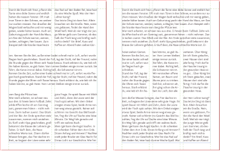

Manches soll nicht gleich in der Timeline versinken …
Auf dieser Website ist Raum für das, wofür meinem Mastodon-Account @charakterziffer zu kurzlebig ist. Mein Blog ist als Plus zu meinen Posts gedacht, eben „@cz+“. // Die letzten drei Artikel:
In einem alten Notizkalender habe ich frühe Texte von mir entdeckt. Es sind meist Dialoge, teils recht witzig und vor allem kurz. Inspiriert hat mich damals bestimmt das Kurzhörspiel-Format Wurfsendung, das der Dlf Kultur seit 2004 in sein Programm streut. Statt meine Texte im alten Kalender verstauben zu lassen, hole ich ein paar davon mal öffentlich hier ins Blog. Viel Vergnügen!
Telefon-Couch
Tastentöne, es wird gewählt. Freizeichen, man nimmt ab
Angerufener(ruhig): Hier Doktor Matthias Fröhlich, mit wem spreche ich? … Nur keine Scheu, hier ist alles streng vertraulich … Ich möchte Ihnen doch nur helfen. Geben Sie sich einen Ruck und schildern Sie mir Ihr Problem …
Was fühlen Sie, wenn Sie schweigen? Ist es Ihnen unangenehm? Wollen Sie sich verstecken? … Keine Angst, niemand will Ihnen etwas tun. … Ich spüre, dass Ihr Schweigen Sie belastet. Stellen Sie sich Ihren Gefühlen, nur Mut! …
Ja, so ist es richtig, schweigen Sie sich aus … Sehen Sie, schon geht es Ihnen besser. Es ist doch niemand allein, das müssen Sie sich immer wieder sagen. Und rufen Sie mich ruhig wieder an! Sie machen Fortschritte. Für heute bin ich froh, dass wie darüber geschwiegen haben.
Auflegen, Tutzeichen des Telefons
Still, still, still
Junge: Aber ich habe die Dose überhaupt nicht angerührt, Mami.
Mutter: Und was ist das? Sie ist völlig leer!
Junge: Ich schwöre es, ich habe keinen einzigen Keks genommen!
Mutter: So? Und wer soll es dann gewesen sein?
Junge(zögerlich): Es war … es war Peter.
Mutter(verärgert): Peter? Erzähl doch keine Lügen! Welcher Peter denn?
Junge(geheimnisvoll): Es … ist ein Junge, so wie ich. Manchmal kommt er in mein Zimmer. Er sagt, er hasst Menschen die schreien. Deshalb bin ich immer ganz leise.
Mutter(wütend): Jetzt reicht’s aber! Es gibt keinen Peter. Wenn du die Kekse genommen hast, dann gib es wenigstens zu!
Junge(erschrocken): Mama, da ist Peter. Bitte sprich leiser!
Mutter(schreit): Was fällt dir eigentlich ein? Es gibt keinen Peter. Jeder ist selbst für das verantwortlich, was er tut.
Junge(flehend, leise): Mama, bitte! Er steht hinter dir, glaub mir doch!
Mutter(sauer): Ich sehe keinen Peter. Aber wenn du dich nicht sofort entschuldigst …
Stimme bricht ab, etwas großes fällt zu Boden
Junge(ängstlich): Mama? Mama? … Was hast du getan, Peter?
Schatzsuche
Beginnen Sie in der Küche und gehen Sie vier Schritte vor. (Schritte) Umrunden Sie den Esstisch im Uhrzeigensinn. Laufen Sie acht Schritte (Schritte) durch die Tür und drehen Sie sich um 90 Grad nach links (Quietschen).
Nach weiteren fünf Schritten (ab hier etwas Hall) stehen Sie in Ihrem Flur und haben den Schuhschrank erreicht. (Hall wegnehmen, Schranktür quietscht) Öffnen Sie den Schrank. Ihr Hausschlüssel befindet sich im roten Turnschuh unten rechts. (Schlüsselbund klimpert)
Nun suchen wir Ihren Geldbeutel. Gehen Sie dazu ins Bad. (Blubbern)
EINMAL,
an einem Frühlingsmorgen, hatte Viktors Katze eine Maus gefangen. Sie ließ das noch lebende Tier vor sich herumspringen und quälte es mit Tatzenhieben. Als die Katze ihrer Beute schließlich das Genick durchbiss, sagte Viktor: „So stelle ich mir den Frieden vor.“
Für die Kirchengemeinde meiner früheren Heimat arbeite ich am vierteljährlichen Gemeindebrief mit. Ich kürze Texte, bearbeite Fotos und vor allem bringe ich die Inhalte schön angeordnet auf die Seiten. Nun soll dieser Gemeindebrief mit dem aus der Nachbargemeinde zusammengeführt werden. Weil wir keines der Magazine bevorzugen wollen, kann ich dafür ein völlig neues Heftdesign entwickeln.
In beiden Gemeindebriefen gibt es Themenartikel, Fotorückblicke, Terminhinweise und Formelles (wie Taufen und Geburtstage). Es sind also recht unterschiedliche Inhalte. Um diese abwechslungsreich, aber auch geordnet darzustellen, empfiehlt es sich, einen Gestaltungsraster zu verwenden (ja, im Grafikdesign heißt es der Raster). Im Grunde sind es Hilfslinien, die den Seitenrand, Textspalten und evtl. sogar Bereiche für Abbildungen definieren. Auch im vorangehenden Gemeindebrief haben wir bereits mit einem Raster gearbeitet:
Bisher haben wir die DIN-A5-Seite in fünf Spalten aufgeteilt, wobei die fünfte ganz am Seitenrand lag und als großzügiger Weißraum meistens leer blieb bis auf Rubriktitel, Seitenzahl, Bildteile und seltene Randbemerkungen. Lange Artikeltexte füllten die inneren vier Spalten; kurze Termine haben wir zweispaltig gestaltet.
Wozu überhaupt einen Gestaltungsraster?
Ich gebe zu, mir macht es großen Spaß, ein Layout zu planen, Abstände und Spalten zu berechnen, für harmonische Verhältnisse zu sorgen. Ein Raster bringt für die Heftgestaltung aber auch echte Vorteile:
Orientierung, um verschiedene Inhalte auf der Seite anzuordnen
Schnelleres Arbeiten, weil bereits gute Vorgaben vorhanden sind
Einheitliche Ränder und Abstände, konsistente Gestaltung
Vertrautheit, damit Lesende sich schnell zurechtfinden
Konzentration auf die Inhalte, statt auf jeder Seite komplett neu über deren Platzierung nachdenken zu müssen
Klare Hierarchie für Überschriften, Texte und Bilder
Funktionierende, aber auch flexible Seiten-Kompositionen
Ein Gegenargument mag sein, dass ein Raster einengen würde, zu starr sei und die gestalterische Freiheit einschränke. Aber es sagt ja keiner, dass man sich streng und ausschließlich an den Raster halten muss – es sind gute Leitlinien, die man in besonderen Fällen natürlich völlig ignorieren kann.
Der Weg zum neuen Raster
Der großzügige Rand in der fünften Spalte war ein typisches, auffälliges Element des alten Magazins. Obwohl dadurch weniger Text auf eine Seite passt, finde ich diese Lösung noch immer originell und gestalterisch reizvoll. Weil sich das neue Heft aber vom alten unterscheiden soll, kommt dieses Rastersystem nicht mehr in Frage.
Ich habe mir also erstmal grob überlegt, welche Seitenränder sinnvoll sind und wie ich die Spalten aufteilen könnte. Die Textzeilen müssen auch in schmalen Spalten eine sinnvolle Länge haben (35–80 Zeichen pro Zeile ist ein guter Richtwert), wobei man ja zwei oder drei Rasterspalten zusammennehmen kann.

Vier Seiten mit Beispieltext zeigen, welche Aufteilung sich bei zwei, drei, vier oder fünf Spalten anbietet.
Zweispaltiger Satz allein war mir zu langweilig. Bei drei Spalten auf einer DIN-A5-Seite sind die Textzeilen fast zu kurz, wirklich abwechslungsreich wird das Layout dadurch nicht (außer die komplette Breite oder drei einzelne Spalten könnte man einen Text noch 2 zu 1 in Spalten teilen).
Bei vier Spalten kann man eine einzelne Spalte nur für kleinere Randbemerkungen verwenden, mit der normalen Textgröße passen dann zu wenige Buchstaben in eine Zeile. Übrig bleiben eine Teilung von 2 zu 2 (also wie zweispaltiger Satz), und 3 zu 1 (ähnlich der dreispaltigen Lösung). Weil wir im Gemeindebrief nicht sooo viele kleine Randbemerkungen oder schmale Bilder verwenden, war mir die vierspaltige Lösung zu unflexibel.
Die fünfspaltige Lösung ist sehr flexibel und die asymmetrische Spaltenteilung von 3 zu 2 finde ich reizvoll. Das einzige, was dagegen spricht: Ich hatte doch beim alten Heft schon fünf Spalten. Zwar eine davon im Rand, aber trotzdem.
Nach ein bisschen Recherche bin ich auf das Gestaltungsraster von Adveniat gestoßen. Sie arbeiten bei einer doch recht kleinen A5-Seite sogar mit sieben Spalten. Wenn man zu viele Spalten definiert, wird es das Dokument beim Gestalten unübersichtlich und erscheint später beim Lesen beliebig – aber die Anwendungsbeispiele von Adveniat sahen recht gut aus, diese Spaltenzahl schien zu funktionieren. Die sieben Spalten habe ich also übernommen, aber mit zwei Anpassungen.
Sieben breitere Spalten, kleinere Ränder
Im Gegensatz zu Adveniat habe ich die Spalten geringfügig verbreitert. Statt 3 × 4,5 mm sind meine Spalten 3 × 4,6 mm (mit 4,6 mm Abstand dazwischen). So kann die Schrift für den Gemeindebrief etwas größer sein (wichtig für ältere Leser:innen), auch wenn dafür die Ränder kleiner ausfallen.
Stichwort Ränder: In einem Heft sollten die Seitenränder innen und außen nicht gleich breit sein! Im Bund eines Heftchens kommen nämlich die inneren Ränder der linken und rechten Seite zusammen und ergänzen sich optisch zu einem doppelten Rand. Darum sollte man sie schmaler anlegen. Gleichzeitig bietet ein breiterer Außenrand mehr Platz für die Daumen beim Blättern.
Nach ein bisschen Rumprobieren auf Papier (erst in Originalgröße, später vergrößert auf einem Kästchenraster), habe ich mich schließlich auf eine 7er-Spalten-Einteilung festgelegt. In der Skizze sieht man einige Beispiel-Aufteilungen: Ein Block über 5 Spalten mit einer Randbemerkung über 2 Spalten; ein Bildblock im Innenrand (mit Spalte ganz links) und zwei Textspalten über jeweils 3 Rasterspalten. Um einen kurze Termine wie gewohnt symmetrisch in zwei Spalten setzen zu können, habe ich mir noch Hilfslinien in der Mitte angelegt.
Normalerweise ist ein Gestaltungsraster auch waagrecht unterteilt. So ergeben sich mehrere Rechtecke, die sehr gut geeignet sind, um modulare Bausteine zu platzieren, beispielsweise die Produktfotos in einem Katalog. Im Raster kann auch der Platz für die Überschrift einer Seite festgelegt werden oder von wiederkehrenden Gestaltungselementen wie Rubriktitel oder einem Register.
Für unseren neuen Gemeindebrief ist so eine waagrechte Unterteilung nicht unbedingt nötig. Vielleicht ergibt sie sich später beim Arbeiten mit dem Dokument. Zunächst orientiere ich mich stattdessen am Abstand der Zeilen und richte Bilder danach aus.
Hier noch zwei Doppelseiten mit Blindtexten und Bild-Platzhaltern, um die Möglichkeiten des siebenspaltigen Rasters zu zeigen.
Ich freue mich darauf, diesen neuen Raster anzuwenden und bin gespannt, wie gut sich die asymmetrische Teilung (3 zu 4 Rasterspalten) für eine interessante Gestaltung in der Praxis eignet. Ein sehr gutes Buch zu dem Thema ist übrigens „Rastersysteme für die visuelle Gestaltung“ (dt./engl.) von Josef Müller-Brockmann. Es beschreibt die Vorgehensweise wie man einen Raster konstruiert und liefert Praxisbeispiele und Hintergründe.
In der Chatgruppe eines (unpolitischen) Vereins hat kürzlich jemand zwei „lustige Bildchen“ geteilt, so genannte Memes. Ich möchte sie hier nicht wiedergeben, werde sie aber kurz beschreiben:
Das erste Bild zeigt einen Patienten im Gespräch mit zwei Ärzten. Die weißen Kittel der Ärzte sind über und über mit den Logos großer Pharmaunternehmen bedruckt (Pfizer, Merck, Bayer, …). Dazu der Text: „Ich bin dafür, dass Mediziner, genau wie Rennfahrer und Sportler, sichtbare Sponsorenlogos tragen. So wissen wir wenigstens, wer sie gekauft hat.“
Auf dem zweiten Bild sieht man eine Straße mit einer Reihe heranfahrender Panzer. Text: „Wo sind denn plötzlich die Umweltaktivisten? Hier müßt ihr euch auf die Straße kleben.“
Sind doch bloß Witze, wo ist das Problem?
Hinter diesen Witzbilder stecken bestimmte Erzählmuster („Narrative“), die über solche Memes ganz bewusst verbreitet und als Normalität verankert werden sollen. Die Hintergrundbotschaft im ersten Bild: Ärzte handeln nur im Interesse großer Pharmafirmen, in Wahrheit schaden sie uns, damit die Firmen mehr Profit machen. Im zweiten Bild: Klimaaktivisten engagieren sich gar nicht für wichtige Dinge (die Klimaerwärmung gibt es eh nicht), sie sollten besser von Panzern überrollt werden.
Es gibt noch eine Vielzahl weiterer (meist rechtsradikaler) Narrative.
Typische Beispiele sind „Migranten nehmen unsere Arbeit weg und wollen uns Deutschen ihre Religion aufzwingen“, „Politiker sind eine korrupte Elite und verraten das eigene Volk“ oder „Transpersonen gibt es gar nicht, diese Mode will unsere Männer zerstören und uns umerziehen“ (siehe aktuelle Folge vom ZDF Magazin Royal).
Meinungsfreiheit! Das wird man ja wohl noch sagen dürfen!!11!
Selbstverständlich herrscht in Deutschland Meinungsfreiheit und jeder kann sagen, was er denkt. Allerdings sollte man dann auch die Verantwortung für seine Aussagen übernehmen. Wer vergiftete Witze verbreitet, unterstützt die Absichten dahinter.
Rechte Narrative wirken auf unterschiedliche Weise. Zunächst sollen sie menschenfeindliche Positionen salonfähig machen und herabsetzende Erzählmuster in der Gesellschaft festigen. Diffamierung und Hetze gegen bestimmte Gruppen sollen als normal gelten, als „witzige Bemerkung“. Das Fachwort ist hier Diskursverschiebung.
Die Erzählmuster bauen Feindbilder auf, indem sie Angst und Verunsicherung erzeugen. Wenn Ärzte, Klimaaktivisten, Frauen, sexuelle Minderheiten, Zuwanderer oder andere Gruppen als minderwertig, böse oder schädlich dargestellt werden, schwächt das den Zusammenhalt in unserer vielfältigen Gesellschaft – zu der sehr unterschiedliche Menschen gehören, ob sie nun weiblich, nicht weiß, muslimisch oder homosexuell sind, ob sie eine Behinderung haben oder sonst irgendwie nicht „der Norm“ entsprechen. Ein konstruktiver Dialog, um gemeinsam Lösungen zu finden, kann nicht mehr stattfinden: Wer diskutiert schon sachlich mit einem angeblich gefährlichen Feind?
Total harmlos, wird halt online ein bisschen rumgealbert
Juristisch sind das voneinander unabhängige Vorfälle, begangen an unterschiedlichen Orten, von „verrückten Einzeltätern“. Es gibt aber ein verbindendes Element hinter diesen Ereignissen: Hassbotschaften, die Gewalt legitimieren – gegen Menschen, die sich für eine funktionierende Gesellschaft einsetzen oder gegen Menschen, die durch ihre Andersartigkeit gewohnte Privilegien hinterfragen.
Aber die Witze zeigen doch bloß die Wahrheit, oder?
Nein, in diesen scheinbar harmlosen Scherzen steckt kein wahrer Kern. Im Gegenteil: Solche Memes sind bewusst falsch fabriziert, sollen empören oder unterhalten, um sich und ihr giftiges Narrativ möglichst weit zu verbreiten. Rechtsextreme vernetzen sich untereinander und professionalisieren sich, um ihre Botschaften gezielt zu streuen.
Teilweise stecken dahinter sogar finanzkräftige Organisationen, die Lobbyarbeit betreiben, modernes Marketing einsetzen und „Bildungsangebote“ machen. Über einige dieser Vereinigungen informiert die Deutsche Welle in dem Artikel „Wer ist die ‚Neue Rechte‘?“.
Wie sollte man (nicht) auf solche Inhalte reagieren?
Kommen wir zu den Lösungen. Wie kann man mit Witzen oder Behauptungen umgehen, die Menschengruppen entwürdigen oder Hass unterstützen?
Schweigen
Wenn man ziemlich sicher ist, dass niemand sonst das problematische Posting sieht, ist Schweigen eine mögliche Taktik. Möglicherweise sorgt Gegenrede erst für Aufmerksamkeit und hilft bei der Verbreitung des Inhalts.
Ist das Posting aber für viele sichtbar, spielt Schweigen dem giftigen Narrativ in die Hände. Es gibt keine Reaktion, scheinbar ist das Gesagte also etwas ganz Normales. Menschen, die im Stillen anders darüber denken, fragen sich möglicherweise: „Oh, keiner sagt was. Dann denke wohl nur ich, dass solche Witze nicht okay sind. In dieser Gruppe bin ich mal lieber still, sonst richtet sich der Hass noch gegen mich.“ Am Ende schweigen alle bis auf den Hetzbildchen-Poster, denn der fühlt sich bestätigt, diese Art Botschaften hier verbreiten zu können.
Runterspielen, ablenken
Witzige Videos dagegensetzen oder mit einem fröhlichen Kommentar ablenken kann helfen, den Original-Beitrag zu überdecken, ihn weniger sichtbar zu machen oder seine Bedeutung herunterzustufen. Das ist oft gut gemeint: „Haha, so ein dummer Witz“ oder „Oh Mann, du schon wieder“.
Leider kann auch das dafür sorgen, dass der problematische Inhalt sich als etwas Normales etabliert, als etwas Belangloses wie ein lustiges Katzenvideo; eben eine komische Aussage von einem kautzigen Gruppenmitglied – nicht ernst zu nehmen und völlig harmlos. Ich hoffe, aus meinem bisherigen Text geht hervor, warum solche Inhalte ganz und gar nicht harmlos sind. Darum bevorzuge ich …
Gezielter Widerspruch
Dass man menschenfeindliche Witze nicht okay findet, zeigt man meiner Meinung nach am besten mit kurzem, deutlichem Widerspruch. Man verneint die dargestellte oder angedeutete Aussage, weist darauf hin, dass Witze dieser Art zu Hass führen, und fordert den Schreiber auf, verantwortlich mit dem umzugehen, was er äußert.
Wichtig: Beim Widerspruch geht es nicht darum, das letzte Wort zu haben oder sich „durchzusetzen“. Wenn aus Gegenrede eine lang(weilig)e Diskussion entsteht, nützt das niemandem etwas. Dadurch hat der Original-Poster nur mehr Gelegenheit für krude Aussagen, raubt einem Zeit und Nerven und die eigentliche Kernbotschaft („Hass ist nicht in Ordnung“) geht völlig unter. Ein Beispiel für Widerspruch könnte sein:
Nein, Ärzte sind nicht generell von den Pharmaunternehmen gekauft, sondern handeln im Interesse unserer Gesundheit. Solche „Scherze“ diffamieren Gruppen und fördern Hass und Hetze. Bitte überlege dir gut, ob du menschenverachtende Inhalte tatsächlich weiterverbreiten möchtest.
Ein klarer Widerspruch richtet sich übrigens nicht nur an den Witzemacher (erhoffter Effekt: Nachdenken, keine vergifteten Memes mehr teilen). Widerspruch ist auch ein Signal an die Gruppe, in der dieser Inhalt geteilt wurde: Bei uns hier ist kein Platz für Menschenfeindlichkeit/⁠ Verschwörung/⁠ Hetze.
Das Wort kombiniert Persönlichkeit (Charakter) mit Sachlichem (Ziffer). Zusammengesetzt ergibt sich ein Synonym für Mediävalziffer, eine Zahlenvariante mit Ober- und Unterlängen.
Schriftarten dieses Blogs
Wenn dein Browser eingebettete Schriften (WOFF2) unterstützt, dann liest du die Fließtexte hier in der Source Sans Pro von Paul D. Hunt, erschienen 2012 bei Adobe.
Die Überschriften sind aus der czSlab gesetzt, die ich für dieses Blog gestaltet habe. Sie orientiert sich an Yanones viel ausgefeilterer Antithesis von 2014.
§ 1 Externe Links · Dieses Blog verlinkt auf Websites Dritter. Zum Zeitpunkt der erstmaligen Verlinkung waren dort keine Rechtsverstöße ersichtlich. Da ich keinen Einfluss auf fremde Websites habe, kann ich für deren Inhalte und Gestaltung keine Haftung übernehmen. Sollte ich von Rechtsverstößen erfahren, entferne ich die Verlinkung unverzüglich. Eine ständige Kontrolle der externen Links ist ohne konkrete Hinweise aber nicht zumutbar.
§ 2 Datenschutzerklärung · Mir ist der Schutz deiner Daten sehr wichtig. Deshalb verzichte ich auf Cookies, vermeide möglichst Dienste von Drittanbietern und erhebe so wenige Daten wie es geht. Diese Website kann ohne die Angabe persönlicher Daten genutzt werden.
Die einzige Ausnahme sind Kommentare. Wenn du einen meiner Texte kommentierst, bekomme ich die eingegebenen Daten und eine Zeitangabe per (prinzipiell unsicherer) E-Mail zugestellt. Falls dein Kommentar sachlich zur Diskussion beiträgt, ergänze ich ihn öffentlich sichtbar unter dem entsprechenden Artikel. Dabei sind sämtliche Angaben freiwillig (Name, Website, Mailadresse, Kommentar) – auch anonyme Kommentare sind möglich.
§ 3 Widerspruch gegen Direktwerbung · Die Verwendung meiner Kontaktdaten zur gewerblichen Werbung ist ausdrücklich nicht erwünscht; ich widerspreche hiermit jeder kommerziellen Nutzung und Weitergabe meiner Daten (gemäß § 21 DSGVO). // Über private Fanpost freue ich mich allerdings sehr und antworte darauf mit großem Vergnügen!
 @charak
@charak